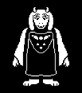

|  |
| Toriel |
|
角色介紹 |
| 中文翻譯 |
托麗爾(羊媽) |
| 初見之地 |
廢墟 |
|
Alphys (前夫) |
| 關係 |
Asriel (兒子) |
|
Chara (收養的孩子) |
|
Sans(素未謀面的笑話朋友) |
Toriel算是玩家的初期導師，教導玩家遊戲機制、陪伴玩家、保護玩家等，以及鼓勵玩家採用非暴力的方式戰鬥，但每當家試圖離開廢墟時，她便會不斷阻止，若玩家一再試圖離開便會進入與她的戰鬥。神奇的是每當玩家血量過低時，Toriel的攻擊就會開始刻意閃避(那怕玩家直接往子彈撞都撞不到)，以至於Toriel一般殺不死主角(但有可能失手)。突破此關的方式有兩種，一是擊殺她，急殺後她會恭喜玩家有了保護自己的能力並在警告玩家不要被Alphys找到後消失，二是不斷使用寬恕鍵後，她便不再攻擊玩家並在給予一個擁抱後。